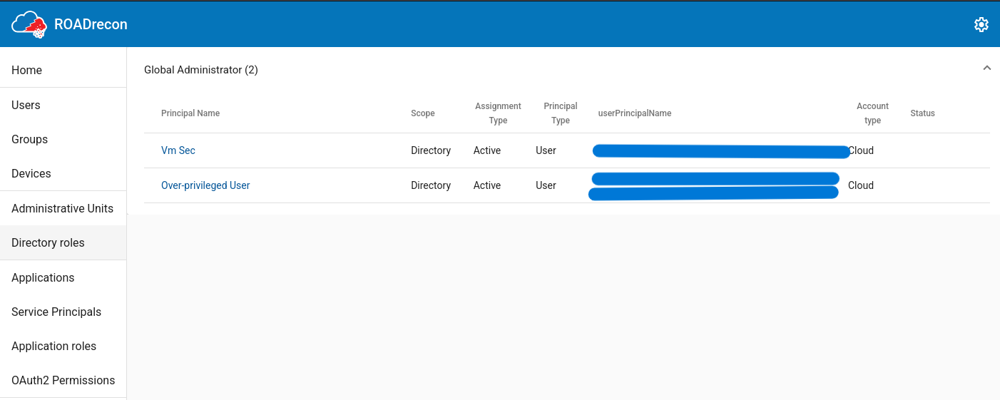
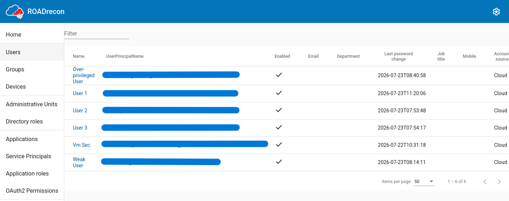
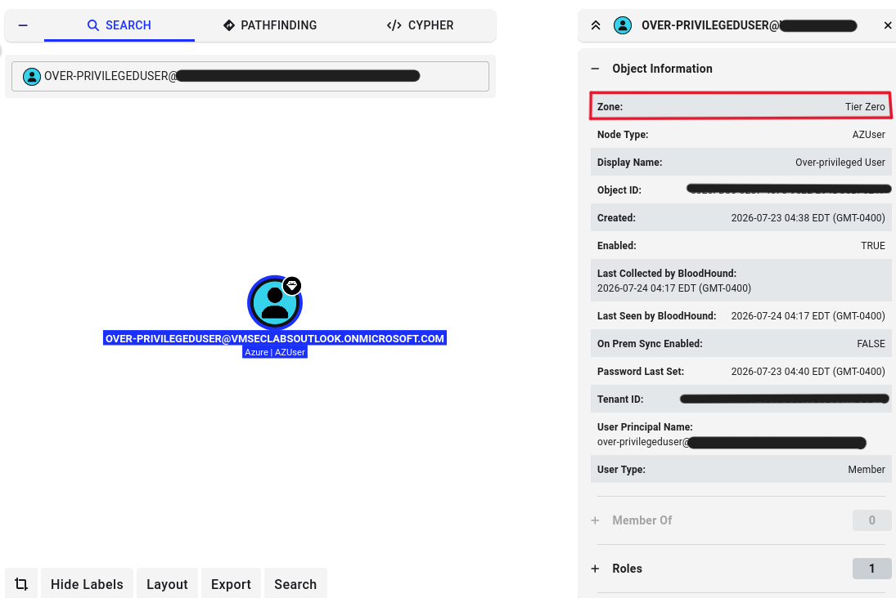
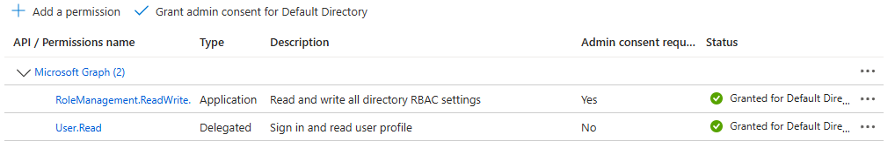
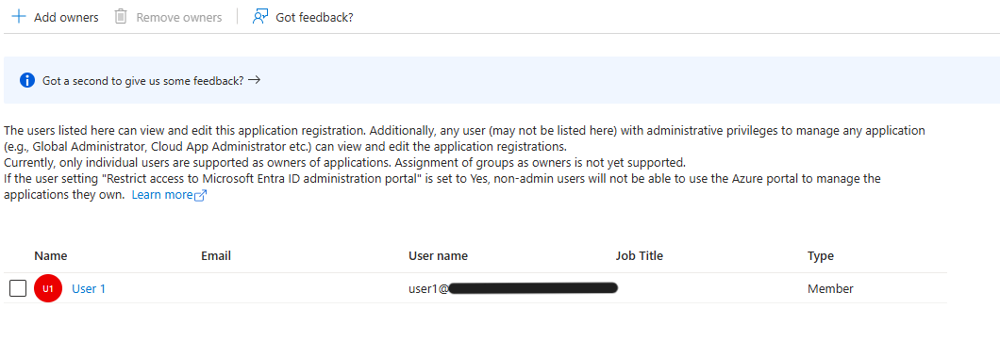
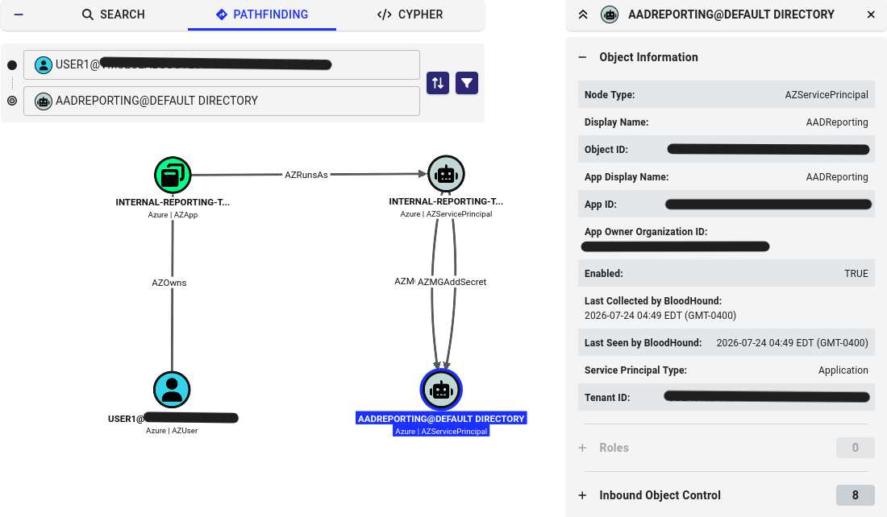

Entra ID Attack Paths I: Enumeration & Privilege Escalation
n this project I built an isolated, deliberately vulnerable Entra ID tenant and attacked it the way a real adversary would after phishing an ordinary employee's password — starting with zero special access and using ROADtools, AzureHound, and BloodHound CE to enumerate the environment and map out what that low-privilege foothold could actually reach. Rather than a contrived textbook path, BloodHound surfaced a genuine, well-documented Entra ID misconfiguration: owning an app registration with the right Graph permission is enough to escalate to Global Administrator, no role of your own required.
Objective
Build a small, deliberately vulnerable Entra ID tenant and attack it using the same class of tools a real adversary would reach for after phishing a low-privilege employee: ROADtools for enumeration, AzureHound to pull directory data, and BloodHound CE to visualize what that low-privilege foothold can actually reach. The goal wasn't to start with admin rights and see what's possible — it was to start as an ordinary user and see how far that alone gets an attacker, mirroring the "assume breach" thinking that real cloud security teams operate under.
Environment
Signing into Azure with my NTNU account would have put me inside NTNU's own production tenant, which means 122 777 real users, tenant creation disabled for member accounts as a matter of sensible organization policy. So the first real decision of this project was building proper isolation: a seperate personal Microsoft account, fully disconnected fromm NTNU and personal use, with its own Azure Free Trail subscription auto-provisioning a dedicated tenant: <lab-tenant>.onmicrosoft.com
Three test users, each built to represent a different role in the attack story:Reflection: Identity seperation isn't a nice-to-have
I went into this expecting the personal-account detour to be a minor setup annoyance. It turned out to be a direct, structural requirement the moment I hit NTNU's tenant restrictions — there was no way to build this lab safely inside my real identity even if I'd wanted to. It's a small but real parallel to how organizations separate test/sandbox environments from production: the separation isn't bureaucratic caution, it's what makes it safe to break things on purpose.
| User | Purpose | Notes |
|---|---|---|
| user1 | Normal baseline employee | Standard password |
| Weak-password user | Attack target | Entra's built-in Password Protection blocket obvious weak patterns outright. "Summer2026!","Coffee2026!","Dragon2026!" and similar were all rejected. Landed on a misspelled-word + number pattern that passed the blocklist while staying realistically guessable. |
| Over-privilegeduser | Simulated excessive/legacy privilege grants | Assigned Global Administrator at creation |
Reflection: Blocklists catch words, not patterns
Entra's password blocklist reliably caught exact dictionary words but let through a deliberately misspelled variant of the same word plus a number; a small, concrete example of how blocklist-based defenses have real gaps against combinator-style password guessing, even when they're doing their job as designed.
Security Defaults over Conditional Access
The original plan was a Conditional Access policy restricting sign-in to my home IP. That requires Entra ID P1/P2 licensing, which isn't available on this tenant tier without a separate trial activation — and after hitting confusing redirects between the Azure, M365, and Power Platform admin portals trying to activate one, I made a deliberate call: rely on Security Defaults instead (free, on by default, enforces MFA and blocks a defined category of legacy authentication tenant-wide).
Reflection: Scoping hardening to what's actually available
The previous lab I conducted made me more aware of 'invisible' risks on the internet, such as bots performing port scanning on the internet to gain access. So, when I set up this lab, I wanted to ensure that I did it with this risk in mind. However, I found that the realistic risk here (nobody knows this tenant exists) didn't justify burning hours untangling licencing portals for IP-restriction I didn't strictly need. I'd rather document a deliberate trade-off than pretend I built something more elaborate than I did. It's worth mentioning that the decision was made in the context of a private lab. Publishing this writeup changes the context, since the tenant's existence and this MFA gap stop being secret the moment this goes live. That's part of why the tenant itself gets shut down once this project is finished, rather than left running behind a redacted domain name indefinitely. This decision gets revisited directly in the second writeup, once Security Defaults turned out to have a gap I hadn't anticipated.
Kali VM tooling
The attacker-side tools used throughout this lab:
- ROADtools: enumeration toolkit for Entra ID, used to authenticate as a tenant user and pull down directory data (users, roles, apps) into a local database
- AzureHound: collector that gathers Entra ID/Azure directory data into a format BloodHound can ingest
- BloodHound Community Edition: graph-based attack path visualization, used to map what a given identity can reach and surface privilege escalation chains
- Docker: used to run BloodHound CE's bundeled servies (Neo4j, PostgreSQL, API server)
Enumeration
Authenticated as the normal user (user1) rather than the over-privileged account deliberately. Using the admin account here would skip past the interesting part of the story: what an attacker can see with zero special access, straight after a plausible phishing compromise.
roadrecon auth -u user1@<lab-tenant>.onmicrosoft.com -p 'their-password-here'
roadrecon gather

As a logged-in normal user with no elevated permissions, I was able to enumerate who holds the highest-privilege role in the entire tenant. This is a textbook real-world finding: attackers don't need admin rights to discover who the admins are, and that information alone is valuable for planning the next stage of an attack — "if I can compromise this specific person, I get full control."

All six accounts were "Cloud" source (cloud-native, not synced from on-prem AD) — worth noting since hybrid environments behave differently and weren't in scope here. No groups were configured in this tenant, so group-based escalation paths weren't part of this particular scenario.
Mapping the attack surface with BloodHound
azurehound -u user1@<lab-tenant>.onmicrosoft.com -p 'their-password' --tenant <lab-tenant>.onmicrosoft.com list -o azurehound-output.json

BloodHound automatically classified the over-privileged account as "Tier Zero" , which is its term for the most critical identities in an environment, without me telling it anything. It inferred that purely from the Global Administrator role assignment, exactly like a real attacker's tooling would flag the most valuable target automatically.
Direct pathfinding from the normal user to the over-privileged account returned no results. This was expected, given this tenant's flat structure with no groups or nested delegations. That's not a dead end so much as an honest result: BloodHound's real value comes from surfacing indirect paths, and a flat tenant simply doesn't have one to find yet.
Finding a real path: app registration ownership
I wanted to demonstrate a realistic escalation path rather than stop at the flat-structure dead end. The first candidate, privilege escalation via role-assignable group ownership, is a well-documented real Entra ID attack path (own a group with a directory role assigned to it, add yourself as a member, inherit the role). It didn't work here: assigning directory roles to groups requires a P1/P2 license, same wall as Conditional Access earlier.
The path that did work: in Entra ID, owning an app registration that's been granted RoleManagement.ReadWrite.Directory on Microsoft Graph is enough on its own. An owner can add a new client secret to that app themselves, authenticate as the app, and use its permission to assign any directory role (including Global Administrator) without ever holding a role personally.


Re-running AzureHound and re-importing into BloodHound after granting user1 ownership surfaced the full chain automatically:

AZRunsAs -> AZMGAddSecret path" class="screenshot">user1's ownership of the app registration (AZOwns) extends to its service principal (AZRunsAs), and that ownership grants the ability to add new credentials to it (AZMGAddSecret). Since the service principal holds RoleManagement.ReadWrite.Directory, adding a client secret and authenticating as the app would let an attacker assign themselves any directory role.
Reflection: Ownership is a takeover primitive
This demonstrates a genuinely well-documented real Entra ID misconfiguration class: ownership of an application is effectively equivalent to whatever permissions that application holds, whenever the app has high-privilege Graph permissions, because owners can always mint themselves new credentials for it. Unlike the manually-created over-privileged account (no path, flat structure), this one was automatically surfaced by BloodHound as a genuine attack chain starting from a completely unprivileged user. It's a good illustration of why "who owns what app" matters just as much as "who holds what role" in a real access review.
What's still open
BloodHound mapped the full chain, but I haven't yet actually executed the last step — adding the client secret via Graph and using it to self-assign Global Administrator, to show the escalation complete end-to-end rather than just diagrammed. That's the natural, satisfying finish to this writeup and I'd like to come back and do it properly rather than leave it as "BloodHound says this would work."